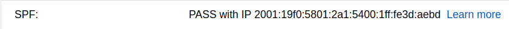
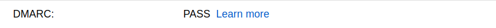

Last updated: November 15, 2017.
This is a simple multi-part guide to email integrity and anti-spam/anti-spoofing with Sendmail in Ubuntu 16.04+.
Please also read my article on STARTTLS transport security with Sendmail using Let's Encrypt.
This guide is written for compliance with Gmail.
As a precursor to these instructions, it's important reverse DNS is configured.
Essentially, a reverse DNS lookup on your email servers IP address should return a domain to which an A (for IPv4) and/or an AAAA (for IPv6) record exists pointing to the same IP address.
For example, in my configuration I send mail from this server (45.76.112.111 and 2001:19f0:5801:2a1:5400:1ff:fe3d:aebd).
A reverse DNS lookup for IPv4 returns aaronhorler.com.
host 45.76.112.111
A reverse DNS lookup for IPv6 returns aaronhorler.com.
host 2001:19f0:5801:2a1:5400:1ff:fe3d:aebd
The A record for the domain points to 45.76.112.111.
dig aaronhorler.com A
The AAAA record for the domain points to 2001:19f0:5801:2a1:5400:1ff:fe3d:aebd.
dig aaronhorler.com AAAA
SPF (Sender Policy Framework) is a means to authorise the sending of an email. It is configured via DNS.
SPF is implemented via a TXT record.
The name for the record should apply to the root domain (this is usually achieved by entering @ or no name, but differs per provider).
For simple Gmail compliance, the data for the record can permit the IP address of a sending server.
My SPF record is (simply) as follows.
"v=spf1 ip6:2001:19f0:5801:2a1:5400:1ff:fe3d:aebd -all"
This record only authorises emails from the public IPv6 address of my server. You can specific an IPv4 address, and IPv6 address, or both. See all options here.
It's important to note that my current email implementation is for outgoing mail to Gmail only. If you intend to send emails to services that may not support IPv6, you need to also include an IPv4 address in the record. You can ignore IPv6 entirely if you don't use it.
When testing for Gmail compliance, the simplist test is to send an email to a Gmail address you operate.
In Gmail, open an email sent from the server. Click the downwards arrow (next to the reply button), and select "Show Original".

SPF results are displayed in the summary.
DKIM (DomainKeys Identified Mail) is a means to authorise the sending of an email via the use of a public and private key pair. The private key is kept private, and used to sign emails. The public key is published via DNS, for use in verifing the signature.
sudo apt install opendkim opendkim-tools
opendkim-genkey -s default -d example.com
Replace example.com with your domain.
This command will generate two files - default.txt and default.private.
Yuor public key is contained in default.txt.
cat default.txt
The output is in bind format.
default._domainkey IN TXT ( "v=DKIM1; h=sha256; k=rsa; "
"p=MIIBIjANBgkqhkiG9w0BAQEFAAOCAQ8AMIIBCgKCAQEAuS1HwxQNj43Nq5fzRmWlEtEf+fcFNpCi2VlW2xfg57o6bhte7yslgtPhn4lS4Gu4Edvdzke0TDQz4M3FJcTslvapDTdDSmOoviaSxlL6IkDtHOyFtJeq3zq0YF6oUJHhUwAEOtiEyjUJksf8BvmMNbewJ4KTHU1HGtIC6UT5bm/Tgy5WeJ+bVqv+oHrtOkq+tH2EZzr6VCx/Cc"
"4xesbcy0D/+Ev1Qbmx1moDVKy9xqmuG3Z09yfQa3MXfkC3D7h0vaII3xjR+6WggA/cigh2I0nwBrd4WX/LiayM+8rdraMpQLez1JGIUwWplcUln6RWVptQgtx2X/cmkP7uq6+VDQIDAQAB" ) ; ----- DKIM key default for example.comThis needs to be manipulated into a TXT record where the name is default.domainkey, and the data is a string consisting of the v, h, k, and p values. Note that the value for p continues onto a second line.
The string data for the example TXT record from above would be as follows.
"v=DKIM1; h=sha256; k=rsa; p=MIIBIjANBgkqhkiG9w0BAQEFAAOCAQ8AMIIBCgKCAQEAuS1HwxQNj43Nq5fzRmWlEtEf+fcFNpCi2VlW2xfg57o6bhte7yslgtPhn4lS4Gu4Edvdzke0TDQz4M3FJcTslvapDTdDSmOoviaSxlL6IkDtHOyFtJeq3zq0YF6oUJHhUwAEOtiEyjUJksf8BvmMNbewJ4KTHU1HGtIC6UT5bm/Tgy5WeJ+bVqv+oHrtOkq+tH2EZzr6VCx/Cc4xesbcy0D/+Ev1Qbmx1moDVKy9xqmuG3Z09yfQa3MXfkC3D7h0vaII3xjR+6WggA/cigh2I0nwBrd4WX/LiayM+8rdraMpQLez1JGIUwWplcUln6RWVptQgtx2X/cmkP7uq6+VDQIDAQAB"
sudo mv default.private /etc/dkimkeys/
sudo chown opendkim: /etc/dkimkeys/default.private
sudo chmod 600 /etc/dkimkeys/default.private
sudo nano /etc/opendkim.conf
Locate, and change, the following lines.
Domain example.com
KeyFile /etc/dkimkeys/default.private
Selector defaultThen, configure OpenDKIM to listen on a unused port on localhost.
sudo nano /etc/default/opendkim
Append the following to the file, where 8100 (the port) can be customised.
SOCKET=inet:8100@127.0.0.1You can verify a port is unused using netstat.
netstat -tulpn | grep :8100
sudo service opendkim start
There's currently a bug with OpenDKIM that prevents it from properly running.
Verify that OpenDKIM is listening on port 8100 (or the port of your choice).
netstat -tulpn | grep :8100
If it is not listening (netstat will return nothing), follow this solution.
sudo /lib/opendkim/opendkim.service.generate
sudo systemctl daemon-reload
sudo service opendkim restart
OpenDKIM should now be listening on the port.
netstat -tulpn | grep :8100
sudo nano /etc/mail/sendmail.mc
Append the following lines.
INPUT_MAIL_FILTER(`opendkim', `S=inet:8100@127.0.0.1')And, regenerate sendmail.cf.
sudo su
m4 /etc/mail/sendmail.mc > /etc/mail/sendmail.cf
exit
Restart Sendmail.
sudo service sendmail restart
When testing for Gmail compliance, the simplist test is to send an email to a Gmail address you operate.
In Gmail, open an email sent from the server. Click the downwards arrow (next to the reply button), and select "Show Original".
DKIM results are displayed in the summary.
DMARC (Domain-based Message Authentication, Reporting and Conformance) is a means to signal a policy for email compliance with your SPF and DKIM records. It's configured via DNS.
DMARC is implemented via a TXT record.
The name for the record should be _dmarc.
DMARC has many options.
My (strict) DMARC record is as follows.
"v=DMARC1; p=reject; adkim=s; aspf=s"
This policy instructs clients (Gmail only, in my case) to reject emails that do not strictly comply with my SPF and DKIM rules.
Implement this carefully. Note that Gmail recommends its G Suit customers implement DMARC slowly by utilising reports and subjecting only a percentage of messages to filtering.
When testing for Gmail compliance, the simplist test is to send an email to a Gmail address you operate.
In Gmail, open an email sent from the server. Click the downwards arrow (next to the reply button), and select "Show Original".

DMARC results are displayed in the summary.